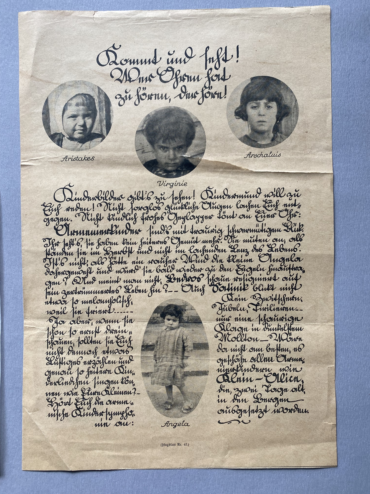
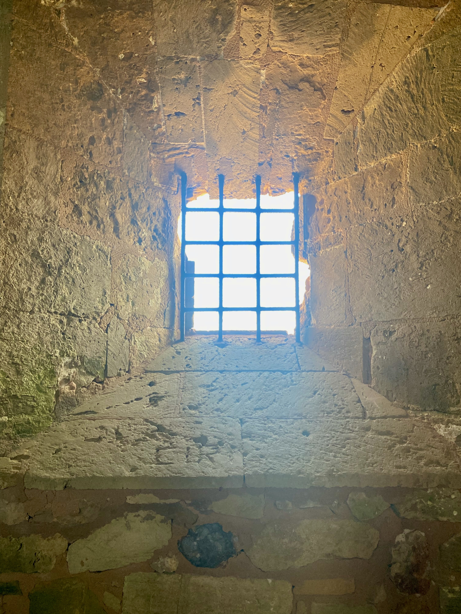

Research Photography
Archives, Landscapes, and Research Travel
A growing gallery of images from archives, research trips, and historical sites connected to ongoing work.
Archive

Crossing the Mediterranean




This page can grow over time with captions, locations, dates, and themed groupings from different archives and research trips.